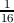

Arminius Mignea
The Lone Pine Software
Abstract
This is the first in a three-part series investigating the internals of the simplest possible self-replicator (SSR). The SSR is defined as having an enclosure with input and output gateways and having the ability to create an exact replica of itself by ingesting and processing materials from its environment. This first part takes an analytical approach and identifies, one by one, the internal functions that must operate inside the SSR to be a fully autonomous replicator.
One of the most remarkable characteristics of living organisms is their ability to self-replicate. There are many forms and manifestations of self-replication. These forms vary from the simplest, single-celled organisms to a wide range of living forms to the most complex organisms, including humans and other mammals.
One of the most intriguing questions that ordinary people, engineers, scientists, and philosophers have obsessed over for centuries is how life on Earth originated and is able to create descendants that look like their parents. Many researchers and scientists have invested tremendous resources in trying to identify a plausible natural means by which the simplest forms of life may have been created from inanimate matter. They have tried to identify, and hopefully reproduce, a set of events and circumstances that somehow puts together the basic elements of the simplest entity to replicate and thus become a living organism.
The goal of this study is to use an engineering approach to develop insights into the internal design of a simplest possible self-replicator (SSR). The SSR is defined for the purpose of this study as an autonomous artifact that has the ability to obtain material input from its environment, grow, and create an exact replica of itself. The replica should “inherit” the ability from its “mother” SSR to create, in its turn, an exact copy of itself.
It is important to observe that this simple definition of the SSR accurately mimics the characteristic behavior of many single-celled organisms, at least from the perspective of their ability to self-reproduce. In particular, they are autonomous in regards to their ability to ingest materials from their environment, to use the ingested materials for growth and production of internal energy, and to produce an identical copy of themselves, usually through a two-step process of cloning and division.
Part 1 and Part 2 of this paper will analyze the process of self-replication as though it is a preliminary study for a research lab tasked to design and build an artificial SSR from scratch. The objectives of this study are as follows:
Because this is a thought experiment on what elements would be required to construct a simple self-replicator and makes use of general knowledge in the field of engineering, references have not been included at the end of part one.
At the highest level, the SSR has the composition illustrated in figure 1.
The SSR replication process has two main phases—the cloning phase (illustrated in figure 2) and the division phase (illustrated in figure 3).
The behavior of the SSR, including basic support functions and the two replication phases, can be outlined as follows:
By conducting a step-by-step analysis of what must be happening inside and at the periphery of the SSR, its growth and replication abilities can be characterized.
Two reasonable assumptions will be made about the SSR. The first assumption is that the SSR is comprised of an enclosure that has the role of separating the SSR from its environment. Secondly, the surface of this enclosure has openings that are used to accept good substances into the SSR—raw materials and raw parts from the SSR environment. These openings will be called input gateways. There are also openings used by the SSR to expel from inside the SSR refuse materials and parts that result from certain transformation/fabrication processes. These openings will be called output gateways.
There is one primary question for the input gateways: Are all the raw materials and raw parts that exist or touch the outside of the enclosure good for the SSR processes? Certainly, they are not. The SSR and its input gateways must feature some ability to select or reject substances, materials, and parts that are outside the SSR interior and determine whether they should enter. For this paper, this feature of the SSR will be called the input flow control function.
The next point to be considered is how the SSR will know which are good raw materials and parts and which are bad materials and parts. The SSR must possess a catalog of good raw materials and parts that will be the informational basis on which the input gateways will open or stay closed. This catalog will be referred to as the raw materials and parts catalog.
The next issue is how the SSR will recognize and accurately identify a material or part at an input gateway as good or bad. That is not a trivial ability. The SSR needs a way to determine the nature of the materials and parts to which its input gateways are exposed. This ability may be supported by a set of material probing procedures and processes. This SSR ability will be called the materials and parts identification function. The complexity of this capability can be compared to the probes on the Martian rover that were used to analyze soil samples for particular compounds.
An input gateway, assisted by the raw materials and parts identification function, determines that a piece of raw material is one of the good materials recorded in the good raw materials and parts catalog. This piece is going to be admitted into the SSR and transported to a particular place for processing or possibly to a temporary storage location followed by processing. In order to do this successfully, the SSR needs to tag or label this piece so that its nature, once determined at the input gateway, is available for subsequent processing stations or storage stations in the SSR. Therefore, any raw material or part that is allowed to enter the SSR, once its nature is identified, is immediately tagged or labeled using a system similar to the bar codes or RFIDs (radio-frequency identification) where the code used is one of the codes in the catalog of raw materials and parts. This systematic labeling and tagging of all accepted materials and parts will be considered another responsibility of the materials and parts identification function. Additionally, during the SSR growth and cloning phases, the SSR will fabricate new parts, components, and assemblies using either raw materials and raw parts or previously fabricated parts, components, and assemblies. The point is that the materials and parts identification function will be responsible for tagging or labeling not only raw materials and parts accepted inside SSR, but also all fabricated parts, components, and assemblies. Therefore, all elements inside the SSR and all SSR parts should bear a permanent identification tag.
This raises another important aspect for the SSR design: The SSR must possess not only an exhaustive catalog of all raw materials and raw parts, but also a catalog of all fabricated parts, components and assemblies with a unique identifier for each type of such elements.
The automated fabrication processes will need additional informational support. This capability can be called the bill of materials function. It is supported by an exhaustive catalog with entries that specify the list of materials required to fabricate each fabricated part, component,and assembly. For each item in this list, the quantity of those materials must be also specified. The bill of materials is an informational function of the SSR. Like all SSR information functions, it has two components: a specific catalog (or database), and a set of information access sub-functions to search, read, write, update, or delete specific entries in the associated catalog that can be accessed by all other SSR functions.
In this case, the catalog is the bill of materials catalog. Below is an example of what an abbreviated entry for a “power supply enclosure” part may look like in such a catalog:
| Part name | Part ID | Flags | Count | Qty | Dimensions |
| Sheet metal  | ID-02409 | Q + D | - | 1.2 | 16x24 |
| Screws * 2 | ID-01670 | C | 8 | - | - |
| Washers * 2 | ID-05629 | C | 8 | - | - |
Some of the raw materials admitted inside the SSR cannot be used directly by the SSR fabrication processes. They need to be transformed into fabrication materials through one or more specific processes. An example, which is not necessarily related to our artificial SSR, is the fabrication of steel (fabrication material) from iron ore and coal (raw materials). The SSR’s ability to extract fabrication materials from sets of raw materials and parts is the fabrication material extraction function. Fabrication materials are registered in the catalog of fabrication materials while every process that is used to extract fabrication materials from raw materials and parts is documented in a fabrication material extraction process catalog.
One can now consider the case when during the cloning phase the SSR must fabricate a component of type A. The bill of materials entry for a component of type A specifies that its “fabrication recipe” requires 2 raw parts of type X and 4 raw parts of type Y. The SSR will need to be able to coordinate the input gateways to admit prior to the cloning process required quantities of parts X and Y, creating stock in a SSR stock room so that the fabrication of component A can go smoothly. This will allow the fabrication of the component to depend less on the available raw parts at any given moment at the enclosure input gateways. This SSR ability will be referred to as the supply chain function. This function is responsible for interacting with fabrication processes within the SSR to gather information prior to fabrication regarding what raw materials, raw parts, or fabricated parts are needed. It will then command other functions (i.e., the input flow control function and the material and parts identification function) to admit, supply, and stock those elements within the SSR.
All the machines inside the SSR need an energy source to perform their work. Thus, the SSR must have the ability to produce energy from the appropriate raw materials and raw parts. This ability will be named the energy generation and distribution function since it has the responsibility not only to generate energy, but also to manage and distribute energy to the energy consumers within the SSR. Importantly, the catalog of raw materials and raw parts, as well as the catalog of fabricated parts, may contain entries that are marked as elements used for energy generation and/or distribution. Also the catalog of processes will contain entries detailing the material processes that are used to generate energy from the energy-marked materials and parts. The supply chain function is responsible for managing the timely supply of materials and parts not only for fabrication but also for energy generation and transport.
The functioning SSR features multiple sites where specific actions happen. These sites will be distributed spatially inside the SSR or on its enclosure and will have well-established positions relative to the elements that maintain the three dimensional structure of the SSR as it grows (named scaffolding elements). For example, there are input gateway sites, possibly some stock room sites, fabrication sites, and assembly sites where the elements of the growing clone inside the SSR are being put together by some machinery. The SSR must have the ability to carry various elements between sites. This ability is named the transport function. It may employ specific means of transport, such as conduits, avenues, conveyors, etc., that are adequate for the particular elements that are being transported and the particular sites within the SSR. An important aspect of SSR activity is the transport of information between producers and consumers within the SSR. For this reason, the transport function is also responsible for transporting information between the SSR sites, at least for the provision of the physical, lower layers of the transport of information.
Another important ability that the SSR needs is the manipulation function. This function consists of the ability to handle, grab, or manipulate raw materials, raw parts, fabricated parts, fabricated components, and fabricated assemblies. For example, this ability is needed to take a raw material or raw part admitted at an input gateway and place it on a conveyor that goes to a stock room or a fabrication site. Once there, another manipulator will grab the material or part and place it in a specified position in the stock room or place it on a fabrication bench or machinery. Manipulation examples abound, since no matter what elements are processed, transported, fabricated, assembled or pushed out of an output gateway, there is a need to adequately handle those elements.
Since the SSR must be able to clone its core elements, its enclosure, and its scaffolding elements, it is absolutely necessary for the SSR to have a fabrication function. This function is the ability to fabricate exact copies of all parts, components, and assemblies that exist inside a mature SSR or on its enclosure. In other words the fabrication function must be able to fabricate all machinery inside the SSR, including fabrication machinery. Since all the elements that reside inside the SSR must be copied (cloned) and various types of information and software elements also reside inside the mature SSR, the fabrication function must also have the ability to accurately copy information and software.
Another capability that must reside within the SSR is the assemblage function. This function allows the SSR to assemble parts into components and assemblies that increase in complexity. The assemblage function is strongly related to the fabrication function. While these two functions can be seen as two sides of the same coin, it makes sense to see them as distinct functions where the fabrication function creates new parts from raw materials and raw parts through special processes (e.g., metal machining) while the assemblage function puts fabricated parts together into more and more complex assemblies. The assemblage function may be needed, for example, to erect and expand the scaffolding and the enclosure during SSR growth along with creating assemblies of smaller components and parts.
The SSR functions discussed so far provide specific assistance for the ingestion of new raw materials and parts into the SSR and SSR growth during the cloning phase based on continuous production of energy and planned fabrication of the elements of the daughter clone growing inside the expanding SSR enclosure. As in any process that performs fabrication and construction of new parts, there will be residual raw materials and raw part fragments. The SSR must be designed to carefully control the growth of the internal and enclosure elements. It cannot grow without limits or in an uncontrolled manner. In order to achieve this objective, the SSR must:
Most of the above responsibilities pertain to the recycling function.
The recycling function controls the output flow control function, which is the ability to control the enclosure output gateways that force out of the SSR the raw materials, raw parts, and raw part fragments marked as refuse by the recycling function.
It has already been noted that the bill of materials function provides for each fabricated part, component, or assembly of the SSR a list of raw materials, parts, and sub-components that are needed for fabrication of that element. Thus, an entry in the bill of materials information catalog is similar in concept to the list of ingredients for cooking a meal. Besides the list of ingredients, the recipe for a meal contains an ordered list of steps needed to prepare the meal. In a similar manner, the SSR must store descriptive information for all construction steps needed to fabricate each SSR element. The SSR’s ability to store and make accessible detailed information about the set of fabrication steps and processes needed for the fabrication of each SSR element (part, component, assembly of components, including the SSR itself) is called the construction plan function.
The construction plan function has an associated construction plan information catalog. This catalog has an entry for each fabricated element of the SSR. A fabricated element can be a simple fabricated part (i.e., fabricated from a single good material). A fabricated element can also be a component which, in this context, refers to an element fabricated through the assemblage of two or more fabricated parts. A fabricated assembly is even more complex: it is fabricated from multiple simple parts and one or more components and possibly one or more (sub) assemblies. The mature SSR (before starting the cloning process) is a particular case of a fabricated assembly. Another example of a fabricated assembly, and the most complex example in this case, is the SSR that contains both the mother core elements and the daughter elements just before division begins.
Each entry in the construction plan catalog contains a reference to the entry in the bill of materials catalog for the same element (to access the parts and components needed for the element fabrication) and an ordered sequence of fabrication and assembly steps.
For each fabrication/assembly step the following information may be provided:
In short, the rationale for the nature, structure, and extent of information items stored for each step of a fabrication plan entry is to provide support for full automation of that element of fabrication. And, as suggested above, fabrication steps can be of a very large variety. The nature of the fabrication process, as well as the nature of fabrication steps, depends on the material basis that will be selected for the design and implementation of the artificial SSR. The alternative material bases that can be realistically considered for creating an artificial SSR are discussed in Part 2 of this study.
Here are several examples of the nature of a fabrication step:
The next issue to solve requires devising a way to track the progress of the cloning and division steps. This is provided by the construction status function. This function uses an information catalog that is similar to the construction plan catalog named the construction status catalog. It has the same list of element entries as the construction plan catalog and describes the same hierarchical composition of each element (part, component, assembly) in sub-elements. Each entry in this catalog has construction status information that reflects the current construction status of that entry and can have values like “not-started,” “started,” or “completed.”
In a similar manner each fabrication step of an entry has a current construction status field that is also used to mark and keep track of the fabrication/construction status for that element at the fabrication step level.
Another issue in developing the artificial SSR is that the SSR has variable geometry. The SSR has variable geometry because, first, the mature SSR must grow in volume and enclosure surface during the cloning phase to make space in its interior for the growing clone. Second, the geometry changes even more radically when the division phase starts and culminates with the complete division of the original SSR in both the mother SSR and the daughter SSR.
The SSR variable geometry presents many considerations and challenges that must be carefully considered by the SSR design and by the hypothetical implementation of the artificial SSR. The first consideration is the structure and composition (texture) of the SSR. This must be designed to allow the following:
Next, special design provisions must be made for the interior SSR scaffolding. The SSR scaffolding is made of structural elements (e.g., pylons, walls, supports, connectors, etc.) that are needed to maintain the three-dimensional structure and integrity of the enclosure and of the SSR interior space(s). The scaffolding design and its elements need to be conceived such that, first, the scaffolding elements may change size as the interior of the SSR grows (during cloning) or shrinks (during division); second, the spacing between scaffolding elements and their connectors may also grow or shrink (during cloning or division phases). Finally, the design of the SSR must also make provisions for the growth, variable geometry, and dynamic restructuring and re-linking of any SSR transport, conduits, paths or communication lines during the cloning and division phases.
The variable geometry means that the SSR design must make specific, detailed provisions for the entirety of its spatial evolution. This includes all geometrical definition points or trajectories (in the x, y, and z axes) of all variable elements of the SSR enclosure, scaffolding and interior. These spatial trajectories need to be harmoniously and coherently coordinated with all fabrication and assemblage steps of the cloning and division phases.
This function is responsible for providing and managing the information communication and notification machinery and mechanisms between the command centers and execution centers of the SSR. For example, the fabrication control function, acting as a command center, may send a command as a specifically encoded information “package” to the fabrication and assemblage functions to build a particular component of the daughter clone. In this circumstance, the fabrication and the assemblage functions operate as execution centers for the command. When the fabrication of the requested component is completed by the fabrication function, it will send a specifically formatted notification information package back to the fabrication control function indicating that the specific command for the fabrication of the specific element was successfully completed. Within the same example scenario, the fabrication function will send, in its turn,—this time playing a command role itself—a command to the supply-chain function (i.e., the executor entity) to trigger the transport of the needed fabrication ingredients for the clone element to the fabrication site. The communication and notification function will need to be deployed ubiquitously throughout the SSR to allow communications/notifications between various functions and machinery operating all over the SSR.
The SSR functions that are described in subsequent sections are the highest level functions of the SSR. They accomplish their goals by coordinating and choreographing the lower level functions described in the previous sections.
The scaffolding growth function is responsible for managing the construction, growth, and position change of the SSR scaffolding elements during the cloning and the division phases of the SSR replication process. This function needs to manage the variable geometry of the scaffolding elements in synchronization and coordination with the other spatial changes of the SSR both on its enclosure and within its interior.
The enclosure growth function is responsible for managing the construction, growth, and shape change of the SSR enclosure as well as the coordinated addition of input and output gateways on the enclosure during the cloning and division phases of the SSR replication process. As mentioned before, this function needs to manage the variable geometry of the enclosure, the dynamic shifting of the gateways on the enclosure’s surface, and the enclosure’s radical shape changes during the division of the SSR into the mother and daughter descendants.
The fabrication control function is responsible for the construction, assemblage and variable geometry management of all interior elements, in particular those related to the cloning portion of the SSR involved in the cloning and the division phases. Like the two preceding growth functions, this function coordinates activities of the fabrication function, assemblage function, construction plan function, recycling function, and other lower level functions.
The cloning control function is responsible for coordinating the whole cloning phase of the growing SSR. It coordinates the cloning and the growth of all of the involved SSR compartments through tight control, synchronization, and coordination of the scaffolding growth, enclosure growth, and fabrication control functions. In particular, this function is responsible for starting the cloning process, monitoring its development, and accurately determining when the cloning process is complete. One particular responsibility of the cloning control function is the cloning of the information stored in the mother SSR. This information cloning is performed at the end of the cloning phase when all internal machinery, internal scaffolding and enclosure elements of the mature SSR are completely cloned and constructed as part of the nascent daughter SSR. The information is cloned by systematically, accurately, and completely copying all information catalogs from resident machinery of the mature SSR into the corresponding new machinery of the clone part.
The division control function has full control of the division phase of the SSR replication process. It manages the SSR division through specific commands sent to the scaffolding growth, enclosure growth and fabrication control functions. In particular, this function is responsible for starting the division process, for choreographing its development on all SSR compartments (enclosure, scaffolding and core), and accurately determining when the division process is complete. One particular responsibility of the division control function is to “start the engines” of the nascent daughter SSR. Just before the moment the division is complete, the division control function must send a command to the daughter SSR to start its own machinery and control functions. When the division completes, the separated daughter SSR becomes a mature, fully functioning autonomous SSR ready to start its own replication process. The separated “mother SSR” can start, in its turn, a new replication cycle.
The replication control function is the highest level SSR function. It is responsible for accomplishing the full SSR replication cycle by coordinating and choreographing its two phases: cloning and division. It does this through corresponding control and coordination of the cloning control function and the division control function.
Metaphorically speaking the replication control function implements the two significant SSR designer commandments: grow and multiply.
Figure 4 provides an overall diagram illustrating the identified set of functions present in the SSR and some of the dependencies between these functions. This figure depicts the main dependencies and interactions between the identified SSR functions, but is limited to only the primary dependencies and interactions.
The communication and notification function is represented separately since it relates to and is used by almost all other SSR functions. Its ubiquity throughout the SSR functions is due to the need for information communication between functions as well as notification (another form of information exchange).
As already mentioned, the relationships and dependencies between the functions are more complex than depicted in the diagram. For example, the transport function depends on the energy generation and transport function although this dependency is not depicted in the diagram.
At this point it makes sense to break down the previous discussions into the general conceptual categories of the artificial SSR’s components to provide an overview of what needs to be accomplished for its creation. Part 2 of this paper will go into more concrete details about the physical components that may make up the artificial SSR. The categories themselves are grouped by functional area.
Various types of information catalogs (databases or repositories) that together make up the information base of the SSR have already been presented. This section contains a list of all of the types of information catalogs identified thus far. It is quite probable that after a more in-depth analysis of the topic, there may be the need for additional types of information catalogs.
The SSR information catalogs need to thoroughly, systematically, and coherently capture all information describing in detail each element of the SSR during its full life-cycle, all relationships between these elements captured in construction plans (body plans), and all fabrication and assemblage procedures and processes.
This requires making certain simplifying assumptions in order to make the presentation of ideas easier to understand. This means that every piece of data or information that the SSR design must capture cannot be fully dissected here. A real information repository not only contains conceptual lists of tables (catalogs) of items of the same nature but also lists of the various relationships that exist between the items in different tables (catalogs). For example, there are certain relationships between the items in the catalog of raw materials and the items in the catalog of the bill of materials. There are different sets of relationships between the entries in the catalog of the construction plans and the entries in the catalog of the bill of materials and the entries in the catalog of processes. For now, this is just a list of the core catalogs that have been identified so far:
This part provides an abstract description of the minimal core components, processes, information stores, and structural requirements of an artificial self-replicating system. Part 2 will cover physical considerations for implementing such a design, and Part 3 will cover speculative ideas for what the existence of self-replicative processes in nature indicates on the larger scale.